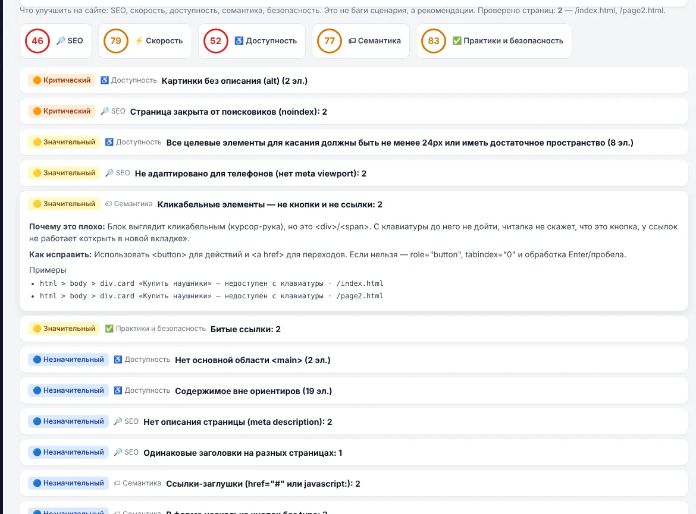

🤖
从录制生成自动测试
点击“录制自动测试”并走一遍场景：点击、输入、选择。添加 ✓ 检查——“文本出现”、“地址包含 /success”。保存后，每次发布都运行全部场景：哪些通过、哪些失败、失败在哪一步，并附截图。
测试人员一秒钟就能看到缺陷，然后却要花 15 分钟截图、复制日志、回忆步骤。开发者拿到的报告没有上下文，又要再花一个小时。
步骤靠回忆，一半都丢了。
点击、输入和跳转自动记录，复现步骤自动生成。
不知道该看哪里，也不知道代码里是哪个按钮。
箭头、框和备注直接画在截图上，并附带元素的 CSS 选择器、HTML 和样式。
错误已经发生，控制台已清空，请求无法重放。
最近 5 分钟的控制台和网络记录已在缓冲区中，包括按下按钮之前发生的事情。
点击 “▶ 开始检查” 或按 Ctrl+Shift+Q。一旦控制台出现错误或请求失败，扩展会自动将其保存为独立条目：当时的截图、错误文本、带服务器响应的请求，以及此前你的操作。

在页面底部的面板中选择工具。每条问题都是一个独立条目：带高亮的截图和你的文字，没有多余日志。需要展示一个场景？开启录屏，事件和请求会一并附上。
点击 “✓ 完成”。报告是按顺序排列的条目列表：错误、问题、录屏。每个条目只包含自己的数据。导出：Word、Markdown、HTML、HAR，或全部打包为一个压缩包。

每个条目都有自己的严重程度——从 🔴 阻塞到 ⚪ 轻微；错误的严重程度会自动选择。报告不会变成日志堆。排版问题只是截图加文字。错误条目包含开发者修复所需的一切。录屏条目包含视频以及录制期间发生的一切。
控制台错误或失败的请求 → 自动生成条目：当时的截图、错误文本、带请求体和服务器响应的请求、出错前的操作，以及前后的控制台和请求。

元素、箭头、区域或备注 → 带高亮的截图、你的文字和语音。没有技术日志——这里不需要。

标签页视频，加上录制期间及之前 1–2 分钟的操作、事件、请求和控制台。

点击“录制自动测试”并走一遍场景：点击、输入、选择。添加 ✓ 检查——“文本出现”、“地址包含 /success”。保存后，每次发布都运行全部场景：哪些通过、哪些失败、失败在哪一步，并附截图。
每个场景都可下载为带配置的现成 .spec.ts 测试——开发者可以接入 CI。与扩展中一样，控制台错误视为失败。
导入规范，扩展会自动检查每个端点：正确、不完整和错误的数据，无令牌，不存在的对象，“创建 → 获取 → 修改 → 删除”链，以及错误的请求顺序。结果是带解释的“API 有什么问题”：500 崩溃、接受损坏数据、不符合 schema、信息泄漏、未授权访问。
500、401 错误、空列表、5 秒延迟、“无网络”——可用于任意请求。可以拿真实响应修改。模拟的请求会在报告中标记，以免被误认为缺陷。
3G、慢速 3G、离线；CPU 慢 4–6 倍；iPhone、Android、iPad。条件会记录在报告的每个条目中。
一个按钮——整页在 375、768、1280 和 1920 px 宽度下的截图，作为报告条目。立刻看出哪里排版错位。
每个打开的页面都会在后台自动检查。报告中有各方向的评分和改进清单：严重程度、为什么不好、如何修复以及具体元素。
自动检查报告可以单独下载，交给开发者或 SEO 专员。

测试人员不需要知道 DevTools 里的 Performance 选项卡在哪。扩展会自动记录开发者通常要找的信息并整理好：先看重点，点击查看细节。

控制台错误或失败的请求 → 带截图、请求、服务器响应和出错前步骤的条目。
优先使用 data-testid 的 CSS 选择器、文本、尺寸、计算样式和 HTML 片段。
箭头、框、编号和说明直接画在图片上。
与其他内容同时录制麦克风：单独保存为文件，并混入视频音轨。
随时开启。点击标记的时间即可将视频跳到该时刻。
“在 Email 字段中输入”、“点击：支付”、“跳转到 /checkout”：步骤来自真实操作。
console.*、未处理的异常、被拒绝的 Promise、未加载的资源。
方法、状态、耗时、请求头、请求体和响应体。HAR 可在 DevTools → Network → Import 中打开。
密码从不记录。导出时会隐藏 Authorization、cookie 以及 URL 和 JSON 中的令牌。
所有报告都保存在本地。可以随时回到任意报告，补充后重新导出。
条目可复制到剪贴板：给 Jira、Telegram、Slack 的文本、截图，或给 Google Docs 和 Notion 的完整内容。
第三方脚本（统计、广告、小部件）的错误不会保存。多余的错误可以永久忽略。
开始检查、选择元素、箭头、完成：不用鼠标，没有多余点击。
操作、网络、控制台、DOM 和渲染在同一刻度上。“重要”筛选可去除噪音。
LCP、INP、CLS 带“良好/较差”评分，长帧及其罪魁脚本，FPS 下降。
适用于任何网站：无变化地重新创建的元素、空的 DOM 更新。React 按组件统计。
条目上的 🤖 按钮：标题、步骤、期望 / 实际、可能原因（前端或后端）以及应检查的内容。还有整份报告的摘要。Claude、ChatGPT 或任何兼容服务——使用你自己的密钥。
可选：CORS 错误、浏览器警告和 DevTools 指标（布局和样式重算、JS 耗时）。
这些是在测试商店中截取的真实报告截图。切换选项卡看看。

给客户和文档使用。带截图的条目、带请求和步骤的错误、环境信息。
适用于 GitLab、Jira、Notion 等跟踪系统。压缩包：report.md、截图文件夹、媒体、HAR。
报告或单个条目——直接生成 Google 文档，截图放在你云端硬盘的文件夹中。视频和语音上传到旁边。
单个文件，任何浏览器都能打开。视频和语音嵌入其中。
给开发者：可导入 DevTools、Charles、Fiddler 或 Postman。
Word + HTML + Markdown + 截图 + 视频 + 语音 + HAR + console.log。附到任务上就完成了。
更少重复劳动，发现更多缺陷。报告里不再有“你到底点了什么？”。
选择器、错误堆栈、服务器响应体和 HAR 直接在任务中。
验收测试：即使不懂技术的人也能用语音和箭头发出清晰的报告。
扩展没有服务器，也不向互联网发送任何内容。所有数据都保存在浏览器本地（IndexedDB），只有在你自己下载报告时才会离开浏览器。密码、银行卡和令牌字段的值从不记录，授权请求头和 cookie 默认在导出时隐藏。
chrome://extensions，在右上角开启“开发者模式”。qa-bug-recorder 文件夹。| Ctrl+Shift+Q | 开始检查 / 打开面板 |
| Alt+Shift+E | 选择元素 |
| Alt+Shift+A | 箭头 |
| Alt+Shift+S | 完成，打开报告 |
| Ctrl+Enter | 保存标记 |
| Esc | 取消工具 |
重新设置：chrome://extensions/shortcuts
几乎不会。拦截控制台和请求只是对标准函数的轻量封装，DOM 变化和渲染每秒批量统计一次，数据只保留最近几分钟。只有你开启视频时才会录制。
对任何网站——根据 HTML 变化：如果元素被删除后以相同内容重新插入，或向属性写入相同的值，这就是浏览器的多余工作。对 React 还会统计组件渲染——使用与 React DevTools 相同的机制。支持 React 16–19，包括生产构建。如果你安装了 React DevTools 扩展，请在 QA Bug Recorder 设置中关闭“统计 React 重新渲染”：两个计数器会互相干扰。
德语、俄语、法语、哈萨克语、葡萄牙语、西班牙语、英语和中文。语言会根据浏览器语言自动选择，也可以在扩展设置中手动选择。报告也会以所选语言生成——方便海外同事或客户阅读缺陷。
只会发送到你选择的服务（Claude、OpenAI 或其他），而且只在你点击 🤖 时发送。密钥保存在你的浏览器中。请求中的令牌、cookie 和密码会在发送前遮盖，也可以关闭截图发送。没有密钥时，按钮会复制一个现成的提示词，方便你手动粘贴到聊天中。
不做设置时，“Google Docs”按钮会复制报告并打开新文档——只需按 Ctrl+V。要一键导出，需要 Google Cloud 的 Client ID：团队中某人按照“🔌 集成”中的分步说明创建一次即可。扩展只能访问它自己创建的文件。
从页面加载时开始收集。安装扩展后请刷新网站标签页（F5）。在 chrome:// 系统页面和 Chrome 扩展商店中，Chrome 禁止扩展运行。
Chrome 只允许在用户明确操作后录制标签页。如果你是通过图标或快捷键开始记录缺陷的，请从页面上的面板开启视频。如果之后跳转到了其他页面，请点击图标 → “⏺ 视频”。
首次按下 🎤 时会打开一个请求麦克风权限的标签页：只需一次。语音会录制为单独的文件，如果视频已开启也会混入视频。
一种通过 DevTools 协议工作的模式：记录所有资源（图片、脚本、样式）、CORS 错误和浏览器警告。此时 Chrome 会显示“某扩展程序正在调试此浏览器”的提示栏，这是正常的。在扩展设置中开启。
WebM（VP9/VP8 + Opus）。可在 Chrome、Firefox、VLC 以及 Windows 10+ 和 macOS 13+ 的播放器中打开。Word 中不会嵌入视频：请使用 HTML 或压缩包。
可以，适用于任何 116 及以上版本的 Chromium 浏览器。安装方式相同：通过扩展页面和开发者模式。
如果它为你和团队节省了时间，欢迎通过银行卡转账支持新功能的开发。
5269 8800 8898 3051
✓ 已复制